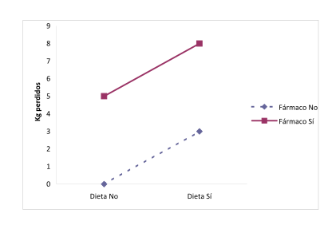
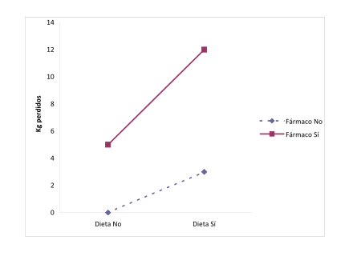
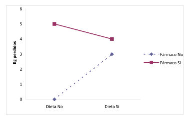
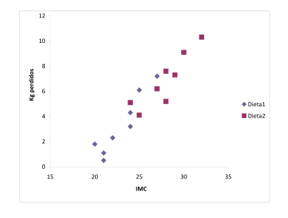
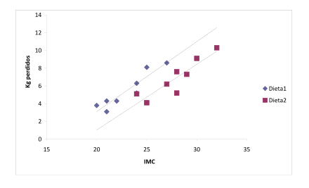

8 Análisis de la Varianza
8.1 Análisis de la varianza de 1 factor
El Análisis de la Varianza con un Factor (ANOVA por sus siglas en inglés), es una técnica estadística de contraste de hipótesis, que sirve para comparar las medias una variable cuantitativa, que suele llamarse variable dependiente o respuesta, en distintos grupos o muestras definidas por una variable cualitativa, llamada variable independiente o factor. Las distintas categorías del factor que definen los grupos a comparar se conocen como niveles o tratamientos del factor.
Se trata, por tanto, de una generalización de la prueba T para la comparación de medias de dos muestras independientes, para diseños experimentales con más de dos muestras. Y se diferencia de un análisis de regresión simple, donde tanto la variable dependiente como la independiente eran cuantitativas, en que en el análisis de la varianza de un factor, la variable independiente o factor es una variable cualitativa, aunque como veremos más adelante en los contrastes de regresión, se puede plantear un contraste de ANOVA como si fuese un contraste de regresión lineal.
Un ejemplo de aplicación de esta técnica podría ser la comparación del nivel de colesterol medio según el grupo sanguíneo. En este caso, la dependiente o factor es el grupo sanguíneo, con cuatro niveles (A, B, O, AB), mientras que la variable respuesta es el nivel de colesterol.
Para comparar las medias de la variable respuesta según los diferentes niveles del factor, se plantea un contraste de hipótesis en el que la hipótesis nula, \(H_0\), es que la variable respuesta tiene igual media en todos los niveles, mientras que la hipótesis alternativa, \(H_1\), es que hay diferencias estadísticamente significativas entre al menos dos de las medias. Dicho contraste se realiza mediante la descomposición de la varianza total de la variable respuesta; de ahí procede el nombre de esta técnica.
8.1.1 El contraste de ANOVA
La notación habitual en ANOVA es la siguiente:
- \(k\): es el número de niveles del factor.
- \(n_i\): es el tamaño de la muestra aleatoria correspondiente al nivel \(i\)-ésimo del factor.
- \(n = \sum_{i = 1}^k {n_i}\): es el número total de observaciones.
- \(X_{ij}\ (i = 1,...,k;\,j = 1,...,n_i)\): es una variable aleatoria que indica la respuesta del \(j\)-ésimo individuo al \(i\)-ésimo nivel del factor.
- \(x_{ij}\): es el valor concreto, en una muestra dada, de la variable \(X_{ij}\).
\[ \begin{array}{c} \mbox{Niveles del factor}\\ \begin{array}{cccc} \hline 1 & 2 & \cdots & k\\ \hline X_{11} & X_{21} & \cdots & X_{k1}\\ X_{12} & X_{22} & \cdots & X_{k2}\\ \vdots & \vdots & \vdots & \vdots\\ X_{1n_1} & X_{2n_2} & \cdots & X_{kn_k}\\ \hline \end{array} \end{array} \]
- \(\mu_i\): es la media de la población del nivel \(i\).
- \(\bar X_i = \sum_{j = 1}^{n_i} X_{ij}/n_i\): es la variable media muestral del nivel \(i\), y estimador de \(\mu_i\).
- \(\bar x_i = \sum_{j = 1}^{n_i} x_{ij}/n_i\): es la estimación concreta para una muestra dada de la variable media muestral del nivel \(i\).
- \(\mu\): es la media global de la población (incluidos todos los niveles).
- \(\bar X = \sum_{i = 1}^k \sum_{j = 1}^{n_i } X_{ij}/n\): es la variable media muestral de todas las respuestas, y estimador de \(\mu\).
- \(\bar x = \sum_{i = 1}^k \sum_{j = 1}^{n_i }x_{ij}/n\): es la estimación concreta para una muestra dada de la variable media muestral.
Con esta notación podemos expresar la variable respuesta mediante un modelo matemático que la descompone en componentes atribuibles a distintas causas:
\[ X_{ij} = \mu + (\mu_i-\mu) + (X_{ij}-\mu_i), \]
es decir, la respuesta \(j\)-ésima en el nivel \(i\)-ésimo puede descomponerse como resultado de una media global, más la desviación con respecto a la media global debida al hecho de que recibe el tratamiento \(i\)-ésimo, más una nueva desviación con respecto a la media del nivel debida a influencias aleatorias.
Sobre este modelo se plantea la hipótesis nula: las medias correspondientes a todos los niveles son iguales; y su correspondiente alternativa: al menos hay dos medias de nivel que son diferentes.
\[\begin{align*} H_0: & \mu_1 = \mu_2 = \cdots = \mu _k\\ H_1: & \mu_i \neq \mu_j \textrm{ para algún } i\neq j. \end{align*}\]
Para poder realizar el contraste con este modelo es necesario plantear ciertas hipótesis estructurales (supuestos del modelo):
- ndependencia: Las \(k\) muestras, correspondientes a los \(k\) niveles del factor,representan muestras aleatorias independientes de \(k\) poblaciones con medias \(\mu_1 = \mu_2 = \cdots = \mu_k\) desconocidas.
- Normalidad: Cada una de las \(k\) poblaciones es normal.
- Homocedasticidad: Cada una de las \(k\) poblaciones tiene la misma varianza \(\sigma^2\).
Teniendo en cuenta la hipótesis nula y los supuestos del modelo, si se sustituye en el modelo las medias poblacionales por sus correspondientes estimadores muestrales, se tiene
\[ X_{ij} = \bar X+(\bar X_i-\bar X)+(X_{ij}-\bar X_i),\] o lo que es lo mismo, \[X_{ij}-\bar X= (\bar X_i-\bar X)+(X_{ij}-\bar X_i). \]
Elevando al cuadrado y teniendo en cuenta las propiedades de los sumatorios, se llega a la ecuación que recibe el nombre de identidad de la suma de cuadrados:
\[ \sum_{i=1}^k \sum_{j=1}^{n_i} (X_{ij}-\bar X)^2 = \sum_{i=1}^k n_i(\bar X_i-\bar X)^2 +\sum_{i=1}^k \sum_{j = 1}^{n_i}(X_{ij}-\bar X_i)^2, \]
donde:
- \(\sum_{i=1}^k \sum_{j=1}^{n_i} (X_{ij}- \bar X)^2\): recibe el nombre de suma total de cuadrados, (\(STC\)), y es la suma de cuadrados de las desviaciones con respecto a la media global; por lo tanto, una medida de la variabilidad total de los datos.
- \(\sum_{j=1}^k n_i(\bar X_i-\bar X)^2\): recibe el nombre de suma de cuadrados de los tratamientos o suma de cuadrados intergrupos, (\(SCInter\)), y es la suma ponderada de cuadrados de las desviaciones de la media de cada nivel con respecto a la media global; por lo tanto, una medida de la variabilidad atribuida al hecho de que se utilizan diferentes niveles o tratamientos.
- \(\sum_{i=1}^k \sum_{j=1}^{n_i}(X_{ij}-\bar X_i )^2\): recibe el nombre de suma de cuadrados residual o suma de cuadrados intragrupos, (\(SCIntra\)), y es la suma de cuadrados de las desviaciones de las observaciones con respecto a las medias de sus respectivos niveles o tratamientos; por lo tanto, una medida de la variabilidad en los datos atribuida a las fluctuaciones aleatorias dentro del mismo nivel.
Con esta notación la identidad de suma de cuadrados se expresa:
\[ SCT = SCInter + SCIntra \]
Y un último paso para llegar al estadístico que permitirá contrastar \(H_0\), es la definición de los Cuadrados Medios, que se obtienen al dividir cada una de las sumas de cuadrados por sus correspondientes grados de libertad. Para \(SCT\) el número de grados de libertad es \(n-1\); para \(SCInter\) es \(k-1\); y para \(SCIntra\) es \(n-k\).
Por lo tanto,
\[\begin{align*} CMT &= \frac{SCT}{n - 1}\\ CMInter &= \frac{SCInter}{k - 1}\\ CMIntra &= \frac{SCIntra}{n -k} \end{align*}\]
Y se podría demostrar que, en el supuesto de ser cierta la hipótesis nula y los supuestos del modelo, el cociente
\[ \frac{{CMInter}}{{CMIntra}} \]
sigue una distribución \(F\) de Fisher con \(k-1\) y \(n-k\) grados de libertad.
De esta forma, si \(H_0\) es cierta, el valor del cociente para un conjunto de muestras dado, estará próximo a 0 (aún siendo siempre mayor que 0); pero si no se cumple \(H_0\) crece la variabilidad intergrupos y la estimación del estadístico crece. En definitiva, realizaremos un contraste de hipótesis unilateral con cola a la derecha de igualdad de varianzas, y para ello calcularemos el \(p\)-valor de la estimación de \(F\) obtenida y aceptaremos o rechazaremos en función del nivel de significación fijado.
8.1.1.1 Tabla de ANOVA
Todos los estadísticos planteados en el apartado anterior se recogen en una tabla denominada Tabla de ANOVA, en la que se ponen los resultados de las estimaciones de dichos estadísticos en las muestras concretas objeto de estudio. Esas tablas también son las que aportan como resultado de cualquier ANOVA los programas estadísticos, que suelen añadir al final de la tabla el \(p\)-valor del estadístico \(F\) calculado, y que permite aceptar o rechazar la hipótesis nula de que las medias correspondientes a todos los niveles del factor son iguales.
| Suma de cuadrados | Grados de libertad | Cuadrados medios | Estadístico F | p-valor | |
|---|---|---|---|---|---|
| Intergrupos | \(SCInter\) | \(k-1\) | \(CMInter=\frac{SCInter}{k-1}\) | \(f=\frac{CMInter}{CMIntra}\) | \(P(F>f)\) |
| Intragrupos | \(SCIntra\) | \(n-k\) | \(CMIntra=\frac{SCIntra}{n-k}\) | ||
| Total | \(SCT\) | \(n-1\) |
8.1.2 Test de comparaciones múltiples y por parejas
Una vez realizado el ANOVA de un factor para comparar las \(k\) medias correspondientes a los \(k\) niveles o tratamientos del factor, se puede concluir aceptando la hipótesis nula, en cuyo caso se da por concluido el análisis de los datos en cuanto a detección de diferencias entre los niveles, o rechazándola, en cuyo caso es natural continuar con el análisis para tratar de localizar con precisión dónde está la diferencia, cuáles son los niveles cuyas respuestas son estadísticamente diferentes.
En el segundo caso, hay varios métodos que permiten detectar las diferencias entre las medias de los diferentes niveles, y que reciben el nombre de test de comparaciones múltiples. A su vez este tipo de test se suele clasificar en:
Test de comparaciones por parejas: Su objetivo es la comparación una a una de todas las posibles parejas de medias que se pueden tomar al considerar los diferentes niveles. Su resultado es una tabla en la que se reflejan las diferencias entre todas las posibles parejas y los intervalos de confianza para dichas diferencias, con la indicación de si hay o no diferencias significativas entre las mismas. Hay que aclarar que los intervalos obtenidos no son los mismos que resultarían si se considera cada pareja de medias por separado, ya que el rechazo de \(H_0\) en el contraste general de ANOVA implica la aceptación de una hipótesis alternativa en la que están involucrados varios contrastes individuales a su vez; y si queremos mantener un nivel de significación \(\alpha\) en el general, en los individuales debemos utilizar un \(\alpha'\) considerablemente más pequeño.
Test de rango múltiple: Su objetivo es la identificación de subconjuntos homogéneos de medias que no se diferencian entre sí.
Para los primeros se puede utilizar el test de Bonferroni; para los segundos, el test de Duncan; y para ambas categorías a la vez los test HSD de Tukey y Scheffé.
8.2 ANOVA de dos o más factores
En muchos problemas aparece no ya un único factor que permite clasificar los individuos de la muestra en \(k\) diferentes niveles, sino que pueden presentarse dos o más factores que permiten clasificar a los individuos de la muestra en múltiples grupos según diferentes criterios, que se pueden analizar para ver si hay o no diferencias significativas entre las medias de la variable respuesta.
Para tratar con este tipo de problemas surge el ANOVA de Dos o Más Factores (o también ANOVA de Dos o Más Vías) como una generalización del proceso de un factor, que además de permitir el análisis de la influencia de cada uno de los factores por separado también hace posible el estudio de la interacción entre ellos.
Por otra parte, también son frecuentes los problemas en los que se toma más de una medida de una variable cuantitativa (respuesta) en cada sujeto de la muestra, y se procede al análisis de las diferencias entre las diferentes medidas. Si sólo se toman dos, el procedimiento adecuado es la T de Student de datos pareados, o su correspondiente no paramétrico, el test de Wilcoxon; pero si se han tomado tres o más medidas, el test paramétrico correspondiente a la T de Student de datos pareados es el ANOVA de Medidas Repetidas.
Incluso también se puede dar el caso de un problema en el que se analice una misma variable cuantitativa medida en varias ocasiones en cada sujeto de la muestra pero teniendo en cuenta a la vez la influencia de uno, dos o más factores que permiten clasificar a los individuos en varios subgrupos diferentes. En definitiva, pueden aparecer problemas donde a la par que un ANOVA de medidas repetidas se requiera realizar un ANOVA de dos o más vías.
Por último, la situación más compleja que se puede plantear en el análisis de una respuesta cuantitativa se presenta cuando, añadida a medidas repetidas y dos o más vías o factores de clasificación, se tienen una o más variables cuantitativas, llamadas covariables, que se piensa que pueden influir en la variable respuesta. Se procede entonces a realizar un ANCOVA o Análisis de Covarianza, con el que se pretende analizar la influencia de los factores y también ver si hay diferencias entre las medidas repetidas pero habiendo eliminado previamente la influencia (variabilidad) debida a la presencia de las covariables que se pretenden controlar.
8.2.1 ANOVA de dos factores con dos niveles cada factor
Para entender qué es un ANOVA de dos o más factores, conviene partir de un caso sencillo con dos factores y dos niveles en cada factor. Por ejemplo, se puede plantear un experimento con individuos que siguen o no una dieta (primer factor: dieta, con dos niveles: sí y no), y que a su vez toman o no un determinado fármaco (segundo factor: fármaco, con dos niveles: sí y no) para reducir su peso corporal (variable respuesta numérica: reducción del peso corporal expresada en Kg). En esta situación, se generan cuatro grupos diferentes: los que no hacen dieta ni toman fármaco (No-No), los que no hacen dieta pero sí toman fármaco (No-Sí), los que hacen dieta y no toman fármaco (Sí-No), y los que hacen dieta y toman fármaco (Sí-Sí). Y se pueden plantear tres efectos diferentes:
El de la dieta: viendo si hay o no diferencias significativas en los Kg perdidos entre los individuos que la han seguido y los que no.
El del fármaco: viendo si hay o no diferencias significativas en los Kg perdidos entre los individuos que lo han tomado y los que no.
El de la interacción: viendo si el efecto combinado de dieta y fármaco es diferente del que tendrían sumando sus efectos por separado, y entonces se diría que sí que hay interacción; o si por el contrario el efecto de la combinación de dieta y fármaco es el mismo que la suma de los efectos por separado, y entonces se diría que no hay interacción.
A su vez, si hay interacción se puede dar en dos sentidos: si la combinación de dieta y fármaco ha hecho perder más kilos a los pacientes de los que cabría esperar con la suma de dieta y fármaco por separado, entonces la interacción de ambos factores ha actuado en sinergia con los mismos, mientras que si la combinación ha hecho perder menos kilos de los que cabría esperar con dieta y fármaco por separado, entonces la interacción ha actuado en antagonismo con ambos.
Siguiendo con el ejemplo, supongamos que la tabla que aparece a continuación refleja la media de Kg perdidos dentro de cada uno de los grupos comentados. Por simplificar el ejemplo, no se reflejan los Kg en cada individuo con la consiguiente variabilidad de los mismos, pero el ANOVA de dos vías sí que tendría en cuenta esa variabilidad para poder hacer inferencia estadística, plantear contrastes de hipótesis y calcular sus correspondientes p-valores.
| Fármaco No | Fármaco Sí | |
|---|---|---|
| Dieta No | 0 | 5 |
| Dieta Sí | 3 | 8 |
Si los resultados obtenidos fuesen los de la tabla anterior, se diría que no hay interacción entre fármaco y dieta, ya que el efecto del fármaco en el grupo de los que no hacen dieta ha hecho perder 5 Kg en media a los individuos, el efecto de la dieta en el grupo de los que no toman fármaco les ha hecho perder 3 Kg en media, y el efecto combinado de dieta y fármaco ha hecho perder 8 Kg con respecto a los que no hacen dieta y tampoco toman fármaco. Estos 8 Kg son iguales a la suma de 3 y 5, es decir iguales a la suma de los efectos de los factores por separado, sin ningún tipo de interacción (de término añadido) que cambie el resultado de la suma.
Con las medias de los cuatro grupos que se generan en el cruce de los dos factores, cada uno con dos niveles (2x2), se representan los gráficos de medias que aparecen más adelante. En estos gráficos, cuando no hay interacción las rectas que unen las medias correspondientes a un mismo nivel de uno de los factores son paralelas dentro de cierto margen de variabilidad.

Por el contrario, también podría obtenerse una tabla en la que la suma de los efectos por separado fuese menor que el efecto combinado de dieta y fármaco:
| Fármaco No | Fármaco Sí | |
|---|---|---|
| Dieta No | 0 | 5 |
| Dieta Sí | 3 | 12 |
En este caso, dejando al margen las variabilidad dentro de cada uno de los grupos y suponiendo que la misma es lo suficientemente pequeña como para que las diferencias sean significativas, los 8 Kg en media que se perderían al sumar los efectos por separado de dieta y fármaco son menores que los 12 que, en media, han perdido los individuos que han tomado el fármaco y han seguido la dieta a la vez. Por lo tanto, se ha producido una interacción de los dos factores que, al unirlos, ha servido para potenciar sus efectos por separado. Dicho de otra forma, para explicar el resultado final de los individuos que han tomado el fármaco y también han seguido la dieta habría que introducir un nuevo término en la suma, el término de interacción, que contribuiría con 4 Kg de pérdida añadidos a los 8 Kg que se perderían considerando simplemente la suma de dieta y fármaco. Como este nuevo término contribuye a aumentar la pérdida que se obtendría al sumar los efectos por separado de ambos factores, se trataría de un caso de interacción en sinergia con los dos factores de partida.

Por último, también se podría obtener una tabla en la que la suma de los efectos por separado fuese mayor que el efecto combinado de los dos factores:
| Fármaco No | Fármaco Sí | |
|---|---|---|
| Dieta No | 0 | 5 |
| Dieta Sí | 3 | 4 |
Igualmente, en este nuevo ejemplo los 8 Kg en media que se perderían al sumar los efectos por separado de los dos factores son mayores que los 4 que en realidad pierden, en media, los individuos que han seguido la dieta y utilizado el fármaco. Por lo tanto, para explicar el resultado obtenido en el grupo de los que toman el fármaco y siguen la dieta habría que introducir un término añadido a la suma de efectos sin más, que se restaría a los 8 Kg hasta dejarlos en 4 Kg. Se trataría de un caso de interacción en antagonismo con los dos factores de partida.

En realidad, la interacción también puede producirse en sinergia con uno de los factores y en antagonismo con el otro, ya que a veces los dos factores pueden producir un efecto con signo contrario. Por ejemplo, al hablar del factor dieta, se tiende a pensar que se trata de una dieta que sirve para bajar el peso, pero también cabe plantearse un experimento con personas que siguen una dieta de alto contenido calórico que en principio debería hacerles subir peso y ver qué evolución siguen cuando a la vez toman un fármaco para bajarlo.
Como puede deducirse fácilmente de las tablas y gráficas anteriores, la presencia de interacción implica que la diferencia entre las medias de los dos grupos dentro de un mismo nivel de uno de los factores no es la misma que para el otro nivel. Por ejemplo, en la segunda tabla, la diferencia entre las medias de Kg perdidos entre los que sí que toman el fármaco y los que no lo toman vale: 5-0=5 Kg en los que no hacen dieta, y 12-3=9 Kg en los que sí que hacen dieta. Lo cual gráficamente se traduce en que la pendiente de la recta que une las medias dentro del grupo de los que sí que toman el fármaco es diferente de la pendiente que une las medias dentro del grupo de los que no lo toman. En las ideas anteriores se basará el planteamiento del contraste de hipótesis para ver si la interacción ha resultado o no significativa.
Como ya se ha comentado, en cualquiera de las tablas anteriores se podrían analizar tres efectos diferentes: el de la dieta, el del fármaco y el de la interacción de dieta con fármaco; lo cual, en términos matemáticos, se traduce en tres contrastes de hipótesis diferentes:
Efecto de la dieta sobre la cantidad de peso perdido:
\(H_0: \mu_{\text{con dieta}}=\mu_{\text{sin dieta}}\)
\(H_1: \mu_{\text{con dieta}}\neq\mu_{\text{sin dieta}}\)Efecto del fármaco sobre la cantidad de peso perdido:
\(H_0: \mu_{\text{con fármaco}}=\mu_{\text{sin fármaco}}\)
\(H_1: \mu_{\text{con fármaco}}\neq\mu_{\text{sin fármaco}}\)Efecto de la interacción entre dieta y fármaco, que a su vez se puede plantear de dos formas equivalentes:
Viendo si dentro dentro de los grupos definidos en función de la dieta la diferencia de Kg perdidos entre los que toman fármaco y los que no lo toman es la misma:
\(H_0: (\mu_{\text{con fármaco}}-\mu_{\text{sin fármaco}})_{\text{sin dieta}}=(\mu_{\text{con fármaco}}-\mu_{\text{sin fármaco}})_{\text{con dieta}}\)
\(H_1: (\mu_{\text{con fármaco}}-\mu_{\text{sin fármaco}})_{\text{sin dieta}}\neq(\mu_{\text{con fármaco}}-\mu_{\text{sin fármaco}})_{\text{con dieta}}\)Viendo si dentro de los grupos definidos en función del fármaco la diferencia de Kg perdidos entre los que hacen dieta y los que no la hacen es la misma:
\(H_0: (\mu_{\text{con dieta}}-\mu_{\text{sin dieta}})_{\text{sin fármaco}}=(\mu_{\text{con dieta}}-\mu_{\text{sin dieta}})_{\text{con fármaco}}\)
\(H_1: (\mu_{\text{con dieta}}-\mu_{\text{sin dieta}})_{\text{sin fármaco}}\neq(\mu_{\text{con dieta}}-\mu_{\text{sin dieta}})_{\text{con fármaco}}\)
Aunque los detalles matemáticos más precisos sobre cómo el ANOVA de dos o más vías da respuesta a los contrastes expuestos quedan fuera del nivel de esta práctica, la idea general es sencilla y muy parecida a la explicada con más detalle en la práctica de ANOVA de una vía. En el ANOVA de una vía, la variabilidad total de los datos, expresada como suma de distancias al cuadrado con respecto a la media global (llamada Suma de Cuadrados Total), se descompone en dos diferentes fuentes de variabilidad: las distancias al cuadrado de los datos de cada grupo con respecto a la media del grupo, Suma de Cuadrados Intra, más las distancias al cuadrado entre las diferentes medias de los grupos y la media general, Suma de Cuadrados Inter. La suma de cuadrados intra-grupos es también llamada Variabilidad Residual o Suma de Cuadrados Residual, ya que su cuantía es una medida de la dispersión residual, remanente incluso después de haber dividido los datos en grupos. Estas sumas de cuadrados, una vez divididas por sus correspondientes grados de libertad, generan varianzas llamadas Cuadrados Medios, y el cociente de cuadrados medios (cuadrado medio inter dividido entre cuadrado medio intra) bajo la hipótesis nula de igualdad de medias en todos los grupos sigue una distribución F de Fisher que se puede utilizar para calcular un \(p\)-valor del contraste de igualdad de medias. En el ANOVA de dos factores, en lugar de dos fuentes de variabilidad tenemos cuatro: una por el primer factor, otra por el segundo, otra por la interacción y otra más que contempla la variabilidad residual o variabilidad intragrupos. En el ejemplo anterior, las cuatro fuentes de variabilidad son:
- La debida al primer factor: la dieta.
- La debida al segundo factor: el fármaco.
- La debida a la interacción entre ambos.
- La residual.
Las tres primeras fuentes de variabilidad llevan asociadas sus correspondientes sumas de cuadrados, similares a la suma de cuadrados inter del ANOVA de una vía, mientras que la variabilidad residual lleva asociada su suma de cuadrados residual, similar a la suma de cuadrados intra del ANOVA de una vía. Dividiendo las sumas de cuadrados entre sus respectivos grados de libertad se obtienen varianzas, que divididas entre la varianza residual generan, bajo la hipótesis nula de igualdad de medias, valores f de la distribución F de Fisher que pueden utilizarse para calcular el p-valor del correspondiente contraste.
Lo anterior se resume en forma de tabla de un ANOVA de dos vías, considerando un primer factor con \(k_1\) niveles, un segundo factor con \(k_2\) niveles y un total de datos \(n\). Si se denomina F1 al primer factor, F2 al segundo, I a la interacción y R al residual, la tabla de un ANOVA de dos vías tiene la siguiente forma:
| Fuente | Suma Cuad | Grad Lib | Cuad Medios | f | \(p\)-valor |
|---|---|---|---|---|---|
| F1 | \(SF1\) | \(GF1=k_1-1\) | \(CF1=\dfrac{{SF1}}{{GF1}}\) | \(f1=\dfrac{{CF1}}{{CR}}\) | \(P(F>f1)\) |
| F2 | \(SF2\) | \(GF2=k_2-1\) | \(CF2=\dfrac{{SF2}}{{GF2}}\) | \(f2=\dfrac{{CF2}}{{CR}}\) | \(P(F>f2)\) |
| I | \(SI\) | \(GI=GF1 \cdot GF2\) | \(CI=\dfrac{{SI}}{{GI}}\) | \(fI=\dfrac{{CI}}{{CR}}\) | \(P(F>fI)\) |
| R | \(SR\) | \(GR=n-1-GF1-GF2-GI\) | \(CR=\dfrac{{SR}}{{GR}}\) | ||
| Total | \(ST\) | \(GT=n-1\) |
Una vez obtenida la tabla, habitualmente mediante un programa de estadística para evitar realizar la gran cantidad de cálculos que conlleva (los distintos programas pueden proporcionar tablas ligeramente diferentes a la expuesta en esta práctica, en las que pueden aparecer filas añadidas cuya interpretación dependerá del programa utilizado), el siguiente paso es la interpretación de los \(p\)-valores obtenidos en cada uno de los factores y en la interacción. Para ello, resulta clave el \(p\)-valor de la interacción porque condicionará completamente el análisis:
Si la interacción no ha resultado significativa (\(p\)-valor de la interacción mayor que el nivel de significación, habitualmente \(0.05\)), se puede considerar por separado la actuación de los dos factores y ver si hay o no diferencias significativas en sus niveles atendiendo al \(p\)-valor que aparece en la tabla para cada uno de ellos. Por ejemplo, en la primera de las tablas del análisis de Kg perdidos en función de la dieta y el fármaco, se obtendría que la interacción no es significativa, lo cual implicaría que habría que analizar el efecto de los factores por separado. Para ello, se acudiría al \(p\)-valor del factor dieta y si es menor que el nivel de significación fijado, entonces el factor dieta habría resultado significativo, lo cual quiere decir que habría diferencias significativas (más allá de las asumibles por azar) entre los Kg perdidos por los individuos que hacen dieta y los que no; y todo ello, independientemente de si los individuos están tomando o no el fármaco, ya que no hay una interacción significativa que ligue los resultados de la dieta con el fármaco. Igualmente, con el factor fármaco, se acudiría a su \(p\)-valor y se vería si hay o no diferencias significativas entre los Kg perdidos por los que toman el fármaco y los que no lo hacen, independientemente de si siguen o no la dieta.
Si la interacción ha resultado significativa (\(p\)-valor de la interacción menor que el nivel de significación, habitualmente \(0.05\)), no se puede considerar por separado la actuación de los dos factores, la presencia de uno de los factores condiciona lo que sucede en el otro y el análisis de diferencias debidas al segundo factor debe realizarse por separado dentro de cada uno de los niveles del primero; y a la inversa, el análisis de diferencias debidas al primero debe realizarse por separado dentro de cada uno de los niveles del segundo. Por ejemplo, en la segunda de las tablas del análisis de Kg perdidos en función de la dieta y el fármaco, muy probablemente se obtendría que la interacción sí que es significativa, con lo cual no habría un único efecto del fármaco: en el grupo de los que no toman el fármaco, la diferencia de Kg perdidos entre los que sí que hacen dieta y los que no la hacen no sería la misma que en el grupo de los que sí que toman el fármaco. E igualmente, tampoco habría un único efecto de la dieta: en el grupo de los que no hacen dieta, la diferencia de Kg perdidos entre los que sí que toman el fármaco y los que no lo hacen no sería la misma que en el grupo de los que sí que hacen dieta.
Una aclaración final importante es que en ningún caso un ANOVA de dos factores con dos niveles en cada vía equivale a hacer por separado una T de Student de datos independientes en cada uno de los factores. Ni siquiera en el caso de que no haya interacción el \(p\)-valor que se obtiene en cada uno de los dos factores coincide con el que se obtendría en la comparación de los niveles mediante la T de Student. El ANOVA de dos factores es una técnica multivariante que cuantifica la influencia de cada una de las variables independientes en la variable dependiente después de haber eliminado la parte de la variabilidad que se debe a las otras variables independientes que forman parte del modelo. En el ejemplo de los Kg perdidos, no sería lo mismo analizar la influencia de la variable dieta después de eliminar la variabilidad explicada mediante la variable fármaco e incluso la interacción entre dieta y fármaco, que es lo que haría el ANOVA de dos factores, que analizar simplemente la influencia de la variable dieta sin más, o fármaco sin más, que es lo que podríamos hacer mediante una T de Student de datos independientes. Tampoco el análisis de la interacción en el ANOVA de dos factores equivale a realizar un ANOVA de una vía considerando una nueva variable independiente con cuatro categorías diferentes (1:Sí-Sí, 2:Sí-No, 3:No-Sí, 4:No-No), por el mismo motivo: las conclusiones del ANOVA de dos vías hay que entenderlas en el contexto de una técnica multivariante en que la importancia de cada variable independiente se obtiene después de eliminar de los datos la variabilidad debida a las demás.
8.2.2 ANOVA de dos factores con tres o más niveles en algún factor
El planteamiento y resolución de un ANOVA de dos factores con tres o más niveles en algún factor es muy parecido al ya expuesto de dos niveles en cada factor. Únicamente cambian ligeramente las hipótesis nulas planteadas en los factores en las que habría que incluir la igualdad de tantas medias como niveles tenga el factor analizado, y las alternativas en las que se supone que alguna de las medias es diferente. En cuanto a las interacciones, también se contemplarían diferencias de medias pero teniendo en cuenta que hay más diferencias posibles al tener más niveles dentro de cada factor.
En cuanto a la interpretación final de los resultados de la tabla del ANOVA, si no hay interacción y sin embargo hay diferencias significativas en cualquiera de los factores con 3 o más niveles, el siguiente paso sería ver entre qué medias se dan esas diferencias. Por ejemplo, si no hay interacción y se ha rechazado la hipótesis nula de igualdad de medias entre los tres niveles del factor 1, habría que ver si esas diferencias aparecen entre los niveles 1 y 2, o entre el 1 y 3, e incluso entre el 2 y el 3, independientemente del factor 2; e igualmente con el factor 2. Para poder ver entre qué niveles hay diferencias, habría que realizar Test de Comparaciones Múltiples y por Parejas; por ejemplo un test de Bonferroni o cualquier otro de los vistos en la práctica de ANOVA de una vía. Si la interacción saliese significativa, habría que hacer lo mismo pero considerando las posibles diferencias entre los 3 niveles del factor 1 dentro de cada nivel del factor 2 y viceversa.
Como ya se ha comentado para el ANOVA de dos factores con dos niveles en cada factor y la T de Student de datos independientes, igualmente el ANOVA de dos factores con tres o más niveles en algún factor no equivale a dos ANOVAS de una vía. El \(p\)-valor que se obtiene en el de dos factores no es el mismo que que se obtendría en los ANOVAS de una vía realizados teniendo en cuenta cada uno de los factores por separado,incluso si la interacción no es significativa.
8.2.3 ANOVA de tres o más factores
Aunque los fundamentos del ANOVA de tres o más factores son muy parecidos a los de dos y la tabla obtenida es muy similar, la complejidad en la interpretación sube un escalón. Por ejemplo, en un ANOVA de tres factores la tabla presentaría los tres efectos de cada uno de los factores por separado, las tres interacciones dobles (1 con 2, 1 con 3 y 2 con 3), e incluso también podría mostrar la interacción triple (los programas de estadística permiten considerar o no las interacciones de cualquier orden). Si la interacción triple fuese significativa, entonces no se podría hablar del efecto general del factor 1, sino que habría que analizar el efecto del factor 1 dentro de cada nivel del 2 y a su vez dentro de cada nivel del 3, y así sucesivamente. Si la interacción triple no fuese significativa pero sí que lo fuese la del factor 1 con el 2, entonces habría que analizar el efecto del factor 1 dentro de cada uno de los niveles del 2 pero independientemente del factor 3. Y así hasta completar un conjunto muy grande de análisis posibles y de Test de Comparaciones Múltiples aplicados. No obstante, es el propio experimentador el que debe limitar el conjunto de análisis a realizar con un planteamiento muy claro del experimento, reduciendo en la medida de lo posible el número de factores considerados y teniendo claro que no merece la pena considerar interacciones triples, o de órdenes superiores, si no hay forma clara de interpretar su resultado.
En ningún caso un ANOVA de tres o más factores equivale a tres ANOVAS de una vía realizados teniendo en cuenta los factores considerados por separado.
8.2.4 Factores fijos y Factores aleatorios
A la hora de realizar un ANOVA de varios factores, el tratamiento de la variabilidad debida a cada uno de ellos y también las conclusiones que se pueden obtener después de realizarlo, son diferentes dependiendo de que los factores sean fijos o aleatorios.
Se entiende como Factor Fijo o Factor de Efectos Fijos aquel cuyos niveles los establece, los fija de antemano, el investigador (por ejemplo, cantidades concretas de fármaco o de tiempo transcurrido), o vienen dados por la propia naturaleza del factor (por ejemplo, el sexo o la dieta). Su variabilidad es más fácil de controlar y también resulta más sencillo su tratamiento en los cálculos que hay que hacer para llegar a la tabla final del ANOVA, pero tienen el problema de que los niveles concretos que toma el factor constituyen la población de niveles sobre los que se hace inferencia. Es decir, no se pueden sacar conclusiones poblacionales que no se refieran a esos niveles fijos con los que se ha trabajado.
Por contra, un Factor Aleatorio o Factor de Efectos Aleatorios es aquel cuyos niveles son seleccionados de forma aleatoria entre todos los posibles niveles del factor (por ejemplo, cantidad de fármaco, con niveles 23 mg, 132 mg y 245 mg, obtenidos al escoger 3 niveles de forma aleatoria entre 0 y 250 mg). Su tratamiento es más complicado, pero al constituir una muestra aleatoria de niveles, se pretende sacar conclusiones extrapolables a todos los niveles posibles.
8.2.4.1 Supuestos del modelo de ANOVA de dos o más vías
Como ya sucedía con el ANOVA de una vía, el de dos o más vías es un test paramétrico que supone que:
Los qdatos deben seguir distribuciones normales dentro de cada categoría, entendiendo por categorías todas las que se forman del cruce de todos los niveles de todos los factores. Por ejemplo, en un ANOVA de 2 factores con 3 niveles en cada factor, se tienen \(3^2\) categorías diferentes.
Todas las distribuciones normales deben tener igualdad de varianzas (homocedasticidad).
Cuando no se cumplen las condiciones anteriores y además las muestras son pequeñas, no se debería aplicar el ANOVA de dos o más vías, con el problema añadido de que no hay un test no paramétrico que lo sustituya. Mediante test no paramétricos (sobre todo mediante el test de Kruskall-Wallis) se podría controlar la influencia de cada uno de los factores por separado en los datos, pero nunca el importantísimo papel de la interacción.
8.3 ANOVA de medidas repetidas
En muchos problemas se cuantifica el valor de una variable dependiente en varias ocasiones en el mismo sujeto (por ejemplo: en un grupo de individuos que están siguiendo una misma dieta, se puede anotar el peso perdido al cabo de un mes, al cabo de dos y al cabo de tres), y se intenta comparar la media de esa variable en las diferentes ocasiones en que se ha medido, es decir, ver si ha habido una evolución de la variable a lo largo de las diferentes medidas (en el ejemplo anterior, una evolución del peso perdido). Conceptualmente es una situación análoga a la estudiada al comparar dos medias con datos emparejados mediante una T de Student de datos emparejados, o su correspondiente no paramétrico, el test de Wilcoxon, pero ahora hay más de dos medidas emparejadas, realizadas en el mismo individuo. En estas situaciones se utiliza el ANOVA de medidas repetidas.
El ANOVA de medidas repetidas, como también sucede con cualquier otro test que utilice datos emparejados, tiene la ventaja de que las comparaciones que se realizan están basadas en lo que sucede dentro de cada sujeto (intra-sujetos), lo cual reduce el ruido o variabilidad que se produce en comparaciones entre diferentes grupos de sujetos. Por ejemplo, en el estudio sobre la evolución del peso perdido con personas que siguen la misma dieta, se podría haber cuantificado la variable al cabo de uno, dos y tres meses, pero en tres grupos diferentes que hubiesen seguido la misma dieta, pero con este diseño del estudio no se controlan otras variables que pueden influir en el resultado final, por ejemplo el sexo, la edad, o la cantidad de ejercicio que se hace al día. Dicho de otra forma, en el diseño con grupos independientes es posible que alguno de los grupos tenga una media de edad superior, o no haya igual número de hombres que de mujeres, y todo ello tener su reflejo en el número de Kg perdidos. Mientras que, con el diseño de datos emparejados, la segunda medida se compara con la primera que también se ha realizado en la misma persona, y por lo tanto es igual su sexo, su edad y la cantidad de deporte que realiza; y así con todas las demás medidas que se comparan entre sí pero dentro del mismo individuo. Eso permite controlar la variabilidad y detectar pequeñas diferencias que de otra forma serían indetectables.
8.3.0.1 ANOVA de medidas repetidas como ANOVA de dos vías sin interacción
El ANOVA de medidas repetidas puede realizarse como un ANOVA de dos vías sin interacción sin más que realizar los cálculos oportunos introduciendo adecuadamente los datos en un programa estadístico.
En la situación de partida, si suponemos que tenemos \(k\) medidas emparejadas de una variable dependiente numérica y \(n\) individuos en los que hemos tomado las medidas, los datos se pueden organizar como aparecen en la tabla siguientes:
| 2-5 | VarDep 1 | VarDep 2 | ... | VarDep k |
|---|---|---|---|---|
| Individuo 1 | \(x_{1,1}\) | \(x_{1,2}\) | ... | \(x_{1,k}\) |
| Individuo 2 | \(x_{2,1}\) | \(x_{2,2}\) | ... | \(x_{2,k}\) |
| ... | ... | ... | ... | ... |
| Individuo n | \(x_{n,1}\) | \(x_{n,2}\) | ... | \(x_{n,k}\) |
Pero esos mismos datos también se pueden ordenar en un formato de tabla mucho más conveniente para poderles aplicar un ANOVA de dos vías:
| 2-4 | Var Dep | Individuo | Medida |
|---|---|---|---|
| Fila 1 | \(x_{1,1}\) | 1 | 1 |
| Fila 2 | \(x_{2,1}\) | 2 | 1 |
| ... | ... | ... | ... |
| Fila n | \(x_{n,1}\) | n | 1 |
| Fila n+1 | \(x_{1,2}\) | 1 | 2 |
| Fila n+2 | \(x_{2,2}\) | 2 | 2 |
| ... | ... | ... | ... |
| Fila 2n | \(x_{n,2}\) | n | 2 |
| ... | ... | ... | ... |
| Fila (k-1)n+1 | \(x_{1,k}\) | 1 | k |
| Fila (k-1)n+2 | \(x_{2,k}\) | 2 | k |
| ... | ... | ... | .. |
| Fila kn | \(x_{n,k}\) | n | k |
Con ello, tanto Individuo como Medida son variables categóricas que dividen la muestra total (\(n\cdot k\) datos de la variable dependiente) en grupos: \(n\) grupos en la variable Individuo y \(k\) grupos en la variable Medida. Además, considerando el cruce de ambas variables (Medida x Individuo) se forman \(n\cdot k\) grupos con un único dato de la variable dependiente en cada grupo.
Para explicar la variabilidad de los datos de la variable dependiente cuantitativa se pueden considerar tres fuentes: la debida a la variable Medida, la debida a la variable Individuo, y la residual. Ahora no cabe hablar de la variabilidad debida a la interacción entre Medida e Individuo ya que los grupos que surgen del cruce de los dos factores sólo tienen un dato y no es viable calcular medias y dispersiones dentro de un grupo con un único dato. Y el análisis de la influencia de cada uno de los factores se realiza mediante un ANOVA de dos factores sin interacción, que genera la siguiente tabla:
| Fuente | Suma Cuad | Grad Lib | Cuad Med | F | p-valor |
|---|---|---|---|---|---|
| F1=Medida | \(SF1\) | \(GF1=k-1\) | \(CF1=\dfrac{SF1}{GF1}\) | \(f1=\dfrac{CF1}{CR}\) | \(P(F>f1)\) |
| F2=Individuo | \(SF2\) | \(GF2=n-1\) | \(CF2=\dfrac{SF2}{GF2}\) | \(f2=\dfrac{CF2}{CR}\) | \(P(F>f2)\) |
| Residual | \(SR\) | \(GR=(n \cdot k)-1-GF1-GF2\) | \(CR=\dfrac{SR}{GR}\) | ||
| Total | \(ST\) | \(GT=(n\cdot k)-1\) |
Y permite dar respuesta a los siguientes contrastes:
En la variable Medida:
\(H_0: \mu_{\text{Medida 1}}=\mu_{\text{Medida 2}}=...=\mu_{\text{Medida k}}\)
\(H_1\): Alguna de las medias es diferente.Si el \(p\)-valor obtenido es menor que el nivel de significación fijado querrá decir que alguna de las medias es significativamente diferente del resto. Este es el contraste más importante del ANOVA de medidas repetidas y supone que la variabilidad dentro de cada individuo (intra-sujeto) es lo suficientemente grande como para que se descarte el azar como su causa. Por lo tanto la variable Medida ha tenido un efecto significativo.
En la variable Individuo:
\(H_0: \mu_{\text{Individuo 1}}=\mu_{\text{Individuo 2}}=...=\mu_{\text{Individuo n}}\)
\(H_1\): Alguna de las medias es diferente.Si el \(p\)-valor obtenido es menor que el nivel de significación fijado querrá decir que alguna de las medias es significativamente diferente del resto, y por lo tanto alguno de los individuos analizados ha tenido un comportamiento en la variable dependiente diferente del resto. En realidad no es un contraste importante en el ANOVA de medidas repetidas ya que supone un análisis de la variabilidad entre individuos (inter-sujetos), pero es muy difícil que en un experimento dado esta variabilidad no esté presente.
Si la conclusión del ANOVA es que hay que rechazar alguna de las dos hipótesis nulas, ya sea la de igualdad de medias en los grupos formados por la variable Medida o la de igualdad de medias en los grupos formados por la variable Individuo, entonces en el siguiente paso se podría aplicar un Test de Comparaciones Múltiples y por Parejas, por ejemplo un test de Bonferroni, para ver qué medias son diferentes, especialmente para ver entre qué niveles del la variable Medida se dan las diferencias.
8.3.0.2 Supuestos del ANOVA de medidas repetidas
Como en cualquier otro ANOVA, en el de medidas repetidas se exige que:
Los datos de la variable dependiente deben seguir distribuciones normales dentro de cada grupo, ya sea formado por la variable Medida o por la variable Individuo. Como el contraste más importante se realiza en la variable Medida, resultará especialmente importante que sean normales las distribuciones de todas las Medidas.
Todas las distribuciones normales deben tener igualdad de varianzas (homocedasticidad), especialmente las de las diferentes Medidas.
Cuando en un ANOVA de medidas repetidas se cumple la normalidad y la homocedasticidad de todas las distribuciones se dice que se cumple la Esfericidad de los datos, y hay tests estadísticos especialmente diseñados para contrastar la esfericidad como la prueba de Mauchly.
Cuando no se cumplen las condiciones anteriores y además las muestras son pequeñas, no se debería aplicar el ANOVA de medidas repetidas, pero al menos sí que hay una prueba no paramétrica que permite realizar el contraste de si hay o no diferencias significativas entre los distintos niveles de la variable Medida, que es el test de Friedman.
8.3.1 ANOVA de medidas repetidas + ANOVA de una o más vías
No son pocos los problemas en los que, además de analizar el efecto intra-sujetos en una variable dependiente cuantitativa medida varias veces en los mismos individuos para el que cabría plantear un ANOVA de medidas repetidas, también aparecen variables cualitativas que se piensa que pueden estar relacionadas con la variable dependiente. Estas últimas variables introducen un efecto que aunque habitualmente es catalogado como inter-sujetos más bien se trataría de un efecto inter-grupos, yaque permiten definir grupos entre los que se podría plantear un ANOVA de una o más vías. Por ejemplo, se podría analizar la pérdida de peso en una muestra de individuos al cabo de uno, dos y tres meses de tratamiento (ANOVA de medidas repetidas), pero teniendo en cuenta que los individuos de la muestra han sido divididos en seis grupos que se forman por el cruce de dos factores, Dieta y Ejercicio, con tres dietas diferentes: a, b y c, y dos niveles de ejercicio físico diferentes: bajo y alto. Para analizar la influencia de estos dos factores inter-sujetos, habría que plantear un ANOVA de dos vías con interacción. Para un ejemplo como el comentado, aunque los datos podrían disponerse de una forma similar a la que permite realizar el ANOVA de medidas repetidas como un ANOVA de dos factores (variables Medida e Individuo), y añadirle dos factores más (Dieta y Ejercicio), no resulta cómodo tener que introducir en la matriz de datos varias filas para un mismo individuo (tantas como medidas repetidas diferentes se hayan realizado). Por ello, determinados programas de estadística, como PASW, permiten realizar ANOVAs de medidas repetidas introduciendo los datos en el formato clásico, una fila para cada individuo y una variable para cada una de las medidas repetidas, definiendo factores intra-sujeto que en realidad estarían compuestos por todas las variables que forman parte de las medidas repetidas. Además, a los factores intra-sujeto permiten añadirle nuevos factores inter-sujeto (categorías) que pueden influir en las variables respuesta (las diferentes medidas), e incluso comprobar si hay o no interacción entre los factores inter-sujeto entre sí y con los factores intra-sujeto. Por lo tanto, son procedimientos que realizan a la vez un ANOVA de medidas repetidas y un ANOVA de una o más vías, con la ventaja de que se pueden introducir los datos en la forma clásica: una fila para cada individuo.
El resultado de la aplicación de estos procedimientos es muy parecido a los comentados en apartados previos: se generan tablas de ANOVA en las que se calcula un \(p\)-valor para cada uno de los factores, ya sean intra-sujeto (medidas repetidas) o inter-sujeto (categorías), y también para la interacción, ya sea de los factores inter-sujeto entre sí o de factores inter-sujeto con los intra-sujeto.
8.4 Análisis de la covarianza: ANCOVA
El análisis de la covarianza, ANCOVA, es una extensión del ANOVA (ya sea de una o varias vías y de medidas repetidas), que permite analizar la influencia que sobre la variable dependiente cuantitativa tienen todas las variables independientes categóricas (factores) y las medidas repetidas contempladas en el ANOVA, pero, además, eliminando el efecto que otra u otras variables independientes cuantitativas podrían tener sobre la variable respuesta. Las variables independientes cuyo efecto se pretende eliminar (controlar o ajustar) son llamadas Covariables o Covariantes porque se se espera que covaríen, es decir, que estén correlacionadas con la variable dependiente.
Aunque la explicación detallada de cómo se realiza el ANCOVA va más allá del nivel de lo expuesto en esta práctica, la idea es sencilla: se puede plantear un análisis de regresión de la variable dependiente en función de la covariable (o de las covariables si hay más de una), y eliminar la parte de la variabilidad de la dependiente que se puede explicar gracias a la covariable sin más que trabajar con los residuos del modelo de regresión en lugar de con los datos originales. Posteriormente, se procede a realizar una ANOVA, de uno o varios factores e incluso de medidas repetidas, aplicado a los residuos.
El resultado final de la aplicación del ANCOVA es una tabla muy parecida a la del ANOVA, pero con una línea añadida por para cada una de las covariables. En esas líneas se recoge la cantidad de variabilidad explicada por cada una de las covariables y su correspondiente \(p\)-valor, que da respuesta al contraste de si la covariable es o no prescindible para explicar lo que sucede en la variable dependiente (en términos más técnicos, el contraste sería si la pendiente del modelo de regresión de la variable independiente en función de la covariable puede o no ser igual a 0). En la tabla del ANCOVA no hay ninguna línea añadida que contemple la posible interacción entre la covariable y los distintos factores inter-sujetos, simplemente porque si hubiese interacción no debería aplicarse un modelo de ANCOVA ya que el efecto del factor no podría estimarse porque dependería del valor concreto considerado en la covariable, que, por ser continua, tiene infinitos valores, luego habría infinitos diferentes efectos del factor y no se le podría asignar un \(p\)-valor concreto. Pero sí que la tabla añade una línea para la interacción de cada uno de los factores intra-sujetos con cada una de las covariables, ya que cada factor intra-sujetos internamente está compuesto por varias variables cuantitativas que pueden presentar diferentes pendientes en la regresión en función de la covariable.
Si la representación gráfica habitual para ver si una serie de factores influyen o no en una variable respuesta cuantitativa (ANOVA) es el denominado gráfico de medias, en el ANCOVA el efecto de la covariable en la variable respuesta se puede ver mediante la nube puntos de la variable respuesta en función de la covariable, que presentará un aspecto más o menos rectilíneo dependiendo del nivel de correlación lineal entre ambas. Además, también se puede intuir si un determinado factor influye en la variable respuesta una vez eliminada la influencia de la covariable:
Si la nube de puntos puede ajustarse adecuadamente mediante una única recta de pendente nula, independientemente de los niveles del factor, entonces quiere decir que ni la covariable ni el factor son significativos para explicar la variable respuesta.
Si la nube de puntos se ajusta adecuadamente mediante una única recta de pendiente no nula, independientemente de los niveles del factor, entonces quiere decir que la covariable sí que es significativa pero no así el factor, ya que, una vez eliminada la influencia de la covariable (es decir, tomando como variable dependiente los residuos del ajuste inicial) no habría diferencias entre los distintos niveles (los puntos de las diferentes categorías quedarían a la misma altura).
Por ejemplo, en la siguiente figura aparece el resultado de un experimento en el que se han anotado los Kg perdidos por personas que han seguido dos tipos diferentes de dieta, pero teniendo en cuenta como covariable el índice de masa corporal, que se piensa que también puede influir en el número de Kg perdidos pero que, sin embargo, no se ha controlado a la hora de elaborar los grupos y claramente han quedado desequilibrados en la covariable (los que han tomado la dieta 2 tienen en media mayor índice de masa corporal que los que han tomado la dieta 1). Según la figura, cabría esperar que haya diferencias significativas en los Kg perdidos según la dieta (parece que la dieta 2 hace perder más Kg que la dieta 1), pero en realidad todo se debe a la covariable, y eliminado su efecto (si la pendiente de la recta fuese 0) los dos grupos habrían perdido cantidades muy similares de peso. En definitiva, en similares condiciones de índice de masa corporal, la dieta 2 no haría perder más Kg.

Nube de puntos con covariable significativa y factor no significativo Si la nube de puntos se ajusta adecuadamente mediante varias rectas de pendiente nula, una por cada nivel del factor, entonces la covariable no es significativa, pero sí el factor.
Si la nube de puntos se ajusta adecuadamente con rectas, una por cada nivel del factor, con igual pendiente no nula, y al menos una de las rectas es diferente de todas las demás (al menos uno de los niveles aparece desplazado), entonces tanto la covariable como el factor serían significativos a la hora de explicar la variable dependiente.
Por ejemplo, en la siguiente figura aparece el resultado de un experimento similar al ya comentado: Kg perdidos en función de la dieta y de la covariable índice de masa corporal que no se ha controlado adecuadamente a la hora de hacer los grupos (el grupo de los que toman la dieta 2 tiene mayor IMC de partida). A la vista de la gráfica incluso parece que hay diferencias significativas en el número de Kg perdidos de tal forma que los de la dieta 2 haría perder más, pero todo es consecuencia de la covariable; eliminado su efecto, el número de Kg perdidos por los individuos que toman la dieta 1 es mayor (eliminada la pendiente de la recta, los puntos de la dieta 1 quedarían por arriba).

Nube de puntos con covariable significativa y factor también significativo Si la nube de puntos se ajusta adecuadamente con diferentes rectas, una por cada nivel del factor, con pendientes no nulas pero diferentes, entonces quiere decir que habría interacción entre covariable y factor y no debería plantearse un modelo de ANCOVA.